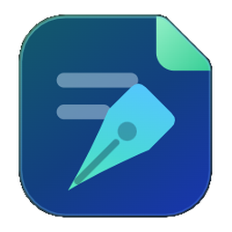

Open one or more PDFs and edit them directly
EDIT changes compatible original PDF text with no mask.
All pages appear in one continuous scroll. Use the + tab to add more PDFs; every file keeps its own edits and download.

EDIT changes compatible original PDF text with no mask.
All pages appear in one continuous scroll. Use the + tab to add more PDFs; every file keeps its own edits and download.